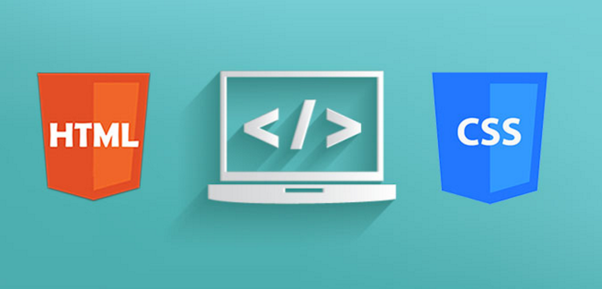

by SAISUKHITH KODALI | Explore 5mins
Getting Started With Fundamentals
share this post



click here for more to learn about HTML
HTML (the Hypertext Markup Language) and CSS (Cascading Style Sheets) are two of the core technologies for building Web pages. HTML provides the structure of the page, CSS the (visual and aural) layout, for a variety of devices. Along with graphics and scripting, HTML and CSS are the basis of building Web pages and Web Applications.
What is HTML?
HTML is the language for describing the structure of Web pages.Publish online documents with headings, text, tables, lists, photos, etc. Retrieve online information via hypertext links, at the click of a button. Design forms for conducting transactions with remote services, for use in searching for information, making reservations, ordering products, etc. Include spread-sheets, video clips, sound clips, and other applications directly in their documents.With HTML, we describe the structure of pages using markup. The elements of the language label pieces of content such as “paragraph,” “list,” “table,” and so on.
What is CSS?
CSS is the language for describing the presentation of Web pages, including colors, layout, and fonts. It allows one to adapt the presentation to different types of devices, such as large screens, small screens, or printers. CSS is independent of HTML and can be used with any XML-based markup language. The separation of HTML from CSS makes it easier to maintain sites, share style sheets across pages, and tailor pages to different environments. This is referred to as the separation of structure (or: content) from presentation.
with the help of html & css we can complete the webpage interface.
The differences between HTML and CSS
Let’s take a look at some of the key differences between HTML and CSS.
- HTML defines the content and the structure of a webpage, whereas CSS translates the display and the design of the HTML elements
- As a result, an HTML can incorporate CSS code in its files, but CSS cannot contain HTML in its sheets
- HTML is one set ‘type’ or ‘method’, whereas, depending on requirement, CSS can either be internal or external
tutorial about html & css